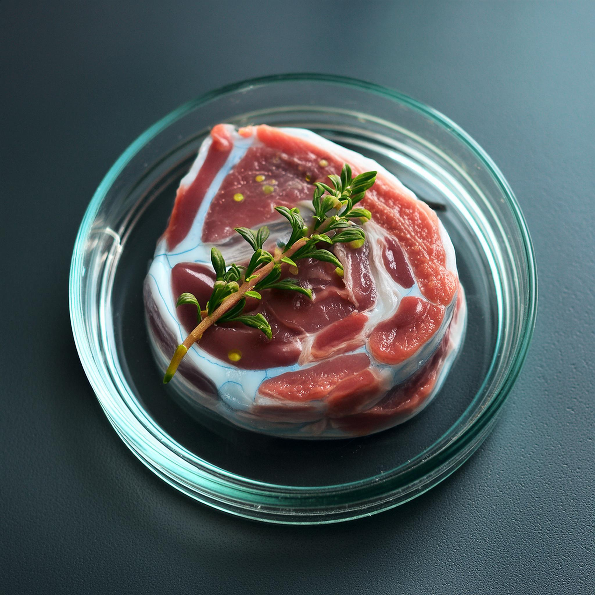

Cultured Meat
Cultured meat is an innovative technology for producing meat without animal slaughter. Here are some key points: Source: Stem cells are taken from a living animal. Growth: The cells are grown in a laboratory under controlled conditions. Growth medium: A nutrient solution is used for cell development. Structure: Cells are shaped into meat tissues using special scaffolds. Advantages: Potential to reduce environmental impacts and improve animal welfare. Challenges: High costs and need for further development for large-scale production. Current status: Already approved for sale in several countries, but still in development and research stages.
Cultured meat, also known as lab-grown meat or in vitro meat, represents a significant shift in food production. The process involves complex bioengineering techniques, including tissue engineering and biotechnology. While the technology shows promise in addressing issues related to conventional meat production, such as greenhouse gas emissions and land use, it also faces regulatory challenges and consumer acceptance hurdles. Scientists are continuously working to improve the taste, texture, and nutritional profile of cultured meat to make it more comparable to traditional meat. As the technology advances, it could potentially revolutionize the food industry, offering a more sustainable and ethical alternative to conventional meat production.
